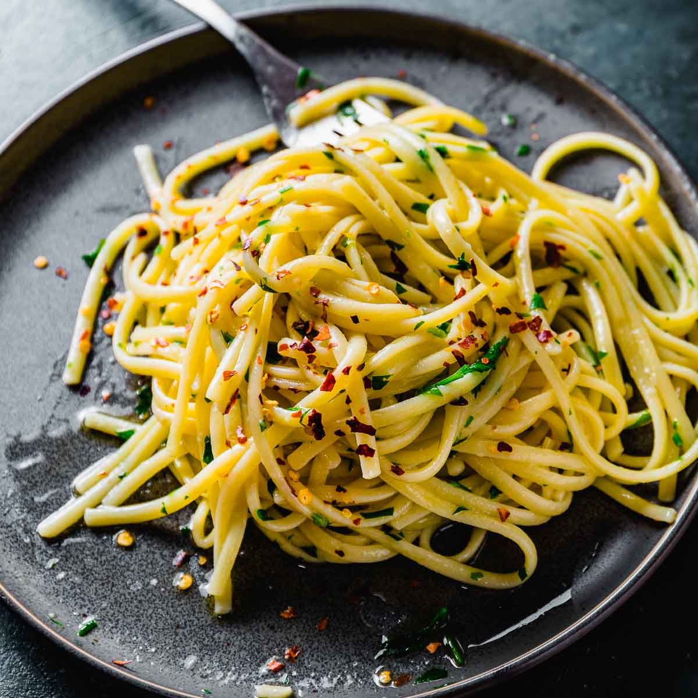

Aglio E Olio

Description
Spaghetti aglio e olio (Italian for 'spaghetti [with] garlic and oil') is a traditional Italian pasta dish from Naples. It is a typical dish of Neapolitan cuisine and is widely popular. Its popularity can be attributed to it being simple to prepare and the fact that it makes use of inexpensive, readily available ingredients that have long shelf lives in a pantry.
Ingredients
- Spaghetti: This recipe, which makes about four servings, starts with one pound of uncooked spaghetti.
- Oil: You’ll need ½ cup of olive oil.
- Garlic: Six cloves of thinly sliced garlic lends bold flavor.
- Seasonings: This traditional spaghetti aglio e olio is flavored with crushed red pepper flakes, black pepper, and fresh parsley.
- Cheese: For the most delicious results, grate your own Parmigiano-Reggiano cheese instead of opting for the pre-shredded stuff.
Steps
- Boil the spaghetti.
- Toast the garlic in olive oil.
- Stir the seasonings into the pasta, then stir in the garlic and oil.
- Toss with cheese.